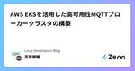

Luup Developers Blogのフィード
https://zenn.dev/p/luup_developers
電動キックボードや小型電動アシスト自転車など、電動マイクロモビリティのシェアサービス「LUUP」を展開するLuupのテックブログです。Zenn Publication利用中 【エンジニア採用中】recruit.luup.sc
フィード

AWS EKSを活用した高可用性MQTTブローカークラスタの構築
Luup Developers Blogのフィード
はじめにIoTチームの高原です。みなさんは「AWS IoT Coreを使わずにスケーラブルなMQTTブローカーを使いてぇ〜」って思ったことありません？ありますよね？例えば、デバイスがMQTT over TLSに対応しておらず、閉域網経由で平文のMQTTメッセージが飛んでくる場合です。調べてみたところEMQXなるMQTTブローカーソフトウェアがあるようなのですが、これをk8s上で管理するためにEMQX Operatorというツールが提供されています。今回はそれを使わせてもらって、AWS EKS上にいい感じのMQTTブローカークラスターを構築します。VerneMQもMQTTブ...
11日前

Luupの開発組織におけるインシデントマネジメントの変遷
Luup Developers Blogのフィード
はじめにLuupのSREチームに所属している、ぐりもお（@gr1m0h）です。6月に「Waroom Meetup #1」にスピーカーとして招待いただきました。また、この勉強会はオンライン配信がなくオフラインのみの開催だったため、7月に広島で行われた「Road to SRE NEXT@広島」でも内容を少しアップデートして登壇しました。https://topotal.connpass.com/event/317285/https://sre-lounge.connpass.com/event/320488/資料はこちらです。どちらのイベントもオフライン開催だったため、資料だ...
23日前
LUUP iOSアプリ開発環境の現状確認 2024年8月
Luup Developers Blogのフィード
こんにちは、iOSアプリエンジニアの茂呂（@slightair）です。この記事はLUUP iOSアプリ開発環境の現状確認と題して、我々の開発環境の状況を紹介するものです。1年半くらい前にも自分がiOSアプリ開発環境に関する記事を書きましたが[1]、それからのアップデートになります。LUUPのサービスを成長させながら、同時に開発環境をどのように前進させているのか紹介させてください。 開発体制について現在、LUUPのiOSアプリ開発に関わっているiOSアプリエンジニアは、正社員3名と業務委託2名になっています。フルタイムでアプリ開発にコミットしているのは正社員の3名であり、業務委託...
2ヶ月前
SRE NEXT 2024でクライアントサイドへのSLI/SLOの導入についてお話しました
Luup Developers Blogのフィード
はじめにLuupのSREチームに所属している、ぐりもお（@gr1m0h）です。日本最大のSREカンファレンス SRE NEXT 2024 に登壇しました。このカンファレンスはSRE Loungeの運営メンバーが主体となって運営しており、今回で4回目の開催です。私の登壇の題は「Enabling Client-side SLO」です。これまでの「Enabling SLO」の活動の一環として、クライアントサイド（iOS・Android）のSLOのを計測し始めた話を共有しました。「Enabling SLO」とは、各開発チームがSREを実践し、SLI/SLOを自律的に設計・実装・運用でき...
2ヶ月前
Luup QAの自動化について
Luup Developers Blogのフィード
はじめにこんにちは、LuupのQAチーム所属のかすみです。手動でQAを行っているといつかは「自動化」という観点が出てきます。品質を担保するにはQAの範囲は広い方がいいと思っています。ただ、手動で全てをやるには限界があります。（物理的にもそうでなくても）そこで、その負担を軽減できる「自動化」を導入するQAチームは少なくありません。Luupのモバイルアプリの自動化チームも立ち上げ期間を経て最近運用フェーズに入ってきましたので、今回は自動化について紹介したいと思います。 そもそもの背景モバイルアプリの手動QAチームはFeatureテストとRegressionテストを7〜...
2ヶ月前
クライアントサイドへのSLI/SLOの導入についてSRE NEXT 2024で話します
Luup Developers Blogのフィード
株式会社Luup SREチームに所属しています、ぐりもお（@gr1m0h）です。この記事は、2024/08/03 - 04 に開催されるSRE NEXT 2024 での登壇内容の紹介です。私は「Enabling Client-side SLO」という題で、8/4 14:10 からTrack B で発表します。興味があればぜひ参加ください。https://sre-next.dev/2024/schedule/ 内容SRE NEXT 2024のオフィシャルサイトに書いてある通りです。Luupでは、電動アシスト自転車、電動キックボードなどの電動マイクロモビリティのシェアリングサ...
3ヶ月前
LUUPアプリ開発エンジニアの「+α」な活動を紹介します
Luup Developers Blogのフィード
はじめにはじめまして！今年からLuupにJoinした井上です。バックエンドエンジニアとしてLUUPアプリの開発に携わっています。今回Developersブログ記事を書くにあたり、なにか発信するのによい技術トピックがあるかな…と最近の開発を振り返っていたのですが、LUUPアプリの開発チーム体制や、私が特徴的だなと感じている日々の取り組みについて意外と過去記事では触れられていないことに気づきました。そこで今回は、私の所属する「Productチーム」とそこに所属するエンジニアの"+α"な活動をご紹介いたします。 Productチームとは メンバー構成Productチー...
3ヶ月前
IoTサービスでSLIを設計する時の考え方 "CMC" について
Luup Developers Blogのフィード
はじめにLuupのSREチームに所属している、ぐりもお（@gr1m0h）です。これまで、登壇の際に、度々CMC: Critical Machine Communication (以下、CMC) の重要性についてお話ししてきました。しかし、その説明は主に登壇時の資料や動画、ブログに留まっており、CMC自体を中心に掘り下げて説明する機会がありませんでした。https://zenn.dev/luup_developers/articles/sre-grimoh-20230517https://zenn.dev/luup_developers/articles/sre-grimoh-...
4ヶ月前
Live Activity をプロダクトに導入した話
Luup Developers Blogのフィード
はじめにこんにちは、つぼやん(@tsuboyan5)です。iOSエンジニアとして、Software DevelopmentチームでLUUPアプリを開発しています！今回はiOSの Live Activity についての話題です。Live Activity は2022年の WWDC で発表された iOS 16.1 から利用できる機能です。iOS 16 以降のユーザーの割合が 96% を超えた今、多くのユーザーが Live Activity を利用できる状態になっています。[1]そんな Live Activity をプロダクトに導入しましたので、その概要や、実装する上で困った点など...
5ヶ月前
try! Swift Tokyo 2024 に参加して来ました！
Luup Developers Blogのフィード
はじめにこんにちは、つぼやんです！iOSエンジニアとして、LUUP アプリを開発しています。3/22〜24の3日間で開催された、try! Swift Tokyo に Luup の iOSエンジニア3人で参加して来ましたので、現地の様子・雰囲気をお伝えできればと思います！ try! Swift Tokyo 2024 についてtry! Swiftは、Swiftを使った開発のコツや最新の事例を求めて世界中から開発者が集うカンファレンスです。今回の try! Swift Tokyo はコロナ禍を乗り越えて、実に5年ぶりのオフライン開催だそう👏会場は、ベルサール渋谷ファースト...
6ヶ月前
2023年の Luup 技術組織の現在地
Luup Developers Blogのフィード
※この記事は、Luup Advent Calendar 2023 の25日目(最終日)の記事です。こんにちは、株式会社Luup CTO の岡田(@7omich)です。2年目もお陰様で完走へ向かっている Advent Calendar ですが、私は今年も最終日の記事を担当することになりました。今年はさらに多彩なメンバーによって、様々な領域での発信が24記事も揃っています。事業づくりに全力を注ぎながらもこれだけの発信量を外に出せるメンバーが引き続き集まってくれていることに感謝しつつ、発信されている内容を振り返っていくと、(12/3公開) pmconf2023登壇 | 事業のターニ...
9ヶ月前
OpenCVとTypeScriptの組み合わせで快適に開発するためにJupyter Notebookを使う
Luup Developers Blogのフィード
この記事は、 Luup Advent Calendar の24日目の記事です。こんにちは、フリーランスでソフトウェアエンジニアをしているfuji44です。最近は、LuupのServerチームでバックエンドエンジニアをしています。今回は、OpenCVとTypeScriptの組み合わせで快適に開発するためにJupyter Notebookを使う方法についてまとめてみました。 はじめに画像解析する際にOpenCVとJupyter Notebookを使い、ビジュアライズしながら試行するのは非常に便利です。この組み合わせではPythonでコーディングすることが多いと思います。Open...
10ヶ月前
管理画面をNuxt2からNuxt3へ移行してみた感想
Luup Developers Blogのフィード
この記事は、Luup Advent Calendar 2023 の23日目の記事です。 はじめにこんにちは、Luupのサーバサイドチームに業務委託として参加しているsmithshiroです。Luupの管理画面ではフロントサイドのフレームワークとしてNuxt.jsを採用してるのですが、Nuxt2のサポートが2024年6月30日(https://v2.nuxt.com/lts/) に切れてしまうので、この度Nuxt3へのバージョンアップを行いました。この記事は、実際にどうやって移行を進めたか、Nuxt3にして便利になった部分、移行で苦労した部分についてのざっくりした内容となります。...
10ヶ月前
インシデントマネジメントのこれまでとこれから
Luup Developers Blogのフィード
これは Luup Advent Calendar 2023 の２２日目の記事です。 はじめに株式会社Luup SREチームに所属しています、ぐりもお（@gr1m0h）です。今年はLuupに転職し、主にSREとしてSLOの推進に携わり、２回の登壇を経て、完全にSLOの領域に身を置くようになりました。（Luupの外からもそのように見えていたと思います）しかし、実はSRE NEXT 2023以降は、インシデントマネジメントの整備に力を入れていました。今回は、インシデントマネジメントの整備にあたりWaroomを採用した経緯について書きたいと思います。 インシデントマネジメントサービ...
10ヶ月前
Private RepositoryのRelease Assetsにアップロードした、XCFrameworkをより簡単に利用する
Luup Developers Blogのフィード
※この記事は Luup Developers Advent Calendar の21日目の記事です。こんにちは。はじめまして。iOSエンジニアの山手です。本業では、公共交通系のiOSアプリの開発に携わりつつ、Luupでは、業務委託としてiOSアプリの機能改修や品質改善等のお手伝いをさせていただいています。今回の記事は、Private RepositoryのRelease Assetsに対してXCFrameworkのzipファイルをアップロードし、PrivateなSwift PackageのBinary targetとして利用するテクニックの紹介になります。 Swift PMでBi...
10ヶ月前
サッと SIM を調査するときに心がけている Tips
Luup Developers Blogのフィード
この記事は Luup Advent Calendar 2023 の 20 日目の記事です。IoT チームの tseigo です。今回はサッと SIM を調査するときに心がけている Tips をいくつかまとめました。 IoT で SIM を試す機会は多いIoT に関する SIM は、データの送受信・SIM に絡んだ認証・デバイス自体の管理といった、いろいろな検証機会があります。もちろん IoT サービスを立ち上げてそのデバイスが普及をさせる初動がよくあるタイミングですが、Luup の中ではデバイスの調整や機能追加を行っているので SIM に関しても、いまでもいろいろなポイントで検...
10ヶ月前
Developers BlogをZenn Publicationに移行した話
Luup Developers Blogのフィード
こんにちは、Luup SREチームのにわです。これは Luup Advent Calendar 2023 の 19 日目の記事です。 最初にLuupのDevelopers BlogはこれまでZennでいう個のアカウントとして書いてきました。そして、以下のような需要があり、Publicationへ移行することにしました。Developers Blogの記事を個人のアカウントから発信したい個人アカウントベースでも発信を積極的にしていってほしい管理権限を冗長化するために複数のアカウントに持たせたいその中で、GitHub上でのレビューフローを変えずに、仕組みを整えて「Dev...
10ヶ月前
IoTのサーバー以外について語ってみる
Luup Developers Blogのフィード
※この記事はLuup Advent Calendarの18日目の記事です。こんにちは。IoTチームの岡谷です。12/1のAdvent Calendarの記事でIoT辛い話をしたのですが、そこから更に深堀りして、IoTに関係する要素について共有させて頂こうと思います。 要素が多くて辛い話からの引用IoT辛い話で上記のスライドの絵を紹介させて頂きました今日はSIMと車両について少しLuupがどうなっているかについて少し深堀りさせてもらおうかと考えています SIMについて通常のモバイルだけで完結するサービスにはSIMという考慮ポイントは存在しません。お客様が持っているモバ...
10ヶ月前
電子ペーパーでデジタルアートフレームを作る
Luup Developers Blogのフィード
※この記事はLuup Advent Calendar 2023の 17 日目の記事です。IoT チーム業務委託エンジニアの山口です。電子ペーパーは表示の保持に電力を必要としない、とても省電力な表示デバイスです。発色の鮮やかさやリフレッシュレートは液晶ディスプレイに劣るものの、バックライトを使わない反射型表示で目に優しく、紙のように広い視野角を持つなど、優れた視認性が特徴です。本記事では電子ペーパーを使用したデジタルアートフレームの製作事例を紹介します。 外観“デジタルアートフレーム”というとやや大仰ですが、これは単に電子ペーパーに ESP32 をつなげて額に収めたものです。...
10ヶ月前
AWS SQS + Lambda Triggerの導入でIoT端末のメッセージ処理を快適に
Luup Developers Blogのフィード
※この記事はLuup Advent Calendarの16日目の記事です。こんにちは。IoTチームのYuxiです。この記事ではメッセージが大量に飛び交うIoTシステムをより楽に処理できる技術、AWS SQS + Lambda Triggerをご紹介します。 IoTの通信メッセージ処理のアーキテクチャーの話IoTシステムでは常に、IoT端末とサーバーの間に通信メッセージが飛び交っています。システム規模によるさまざまな通信メッセージ処理のアーキテクチャーがあると思いますが、今回はサーバーレスなAWS SQS + Lambda Triggerという手法を紹介します。AWS SQ...
10ヶ月前